Overview
Overall, this project was quite enjoyable, and I felt that the two different sections were both interesting as well as useful. Bezier curves are a staple of any digital design tool in use today, and so It felt worthwhile to learn how they work and implement them ourselves. Further, we had never really thought of the fact that bezier curves could also be used in 3D space as Bezier Surfaces. Ofcourse, it makes sense now, but it had never come to mind before. For the next part of the project, we implemented the several triangle mesh methods in order to view and edit COLLADA (.dae) files. First, Phong shading was an excellent introduction to the half edge data structure, which proved to be a challenge in it's own regard. The shading itself however is an extremely powerful tool and it felt great to see such a great looking result! On the topic of the half-edge mesh, it was an absolute pain to work with at the beggining, but once we fully understood it, it felt really powerful and honestly we were amazed at how powerful and ingenious it was. Edge flipping and splitting put these half-edge skills to the test, and it was satisfying to finally see them work together to produce an incredibly useful result after implementing loop division.
Section I: Bezier Curves and Surfaces
Part 1: Bezier Curves with 1D de Casteljau Subdivision
Briefly explain de Casteljau's algorithm and how you implemented it in order to evaluate Bezier curves.de Casteljau's algorithm allows us to evaluate any Bezier curve. The algorithm works recursively by using linear interpolation and a constant, t (0 <= t <=1). We implemented it by looping through all the points at the given step and performing linear interpolation on the points next to each other. Then for the evaluate step function we push the new linearly interpolated point to the end of the vector. This allows us to perform evaluteStep, until we get our final point meaning there is only one point in our vector.
Take a look at the provided .bzc files and create your own Bezier curve with 6 control points of your choosing. Use this Bezier curve for your screenshots below. Show screenshots of each step / level of the evaluation from the original control points down to the final evaluated point. Press E to step through. Toggle C to show the completed Bezier curve as well.
|
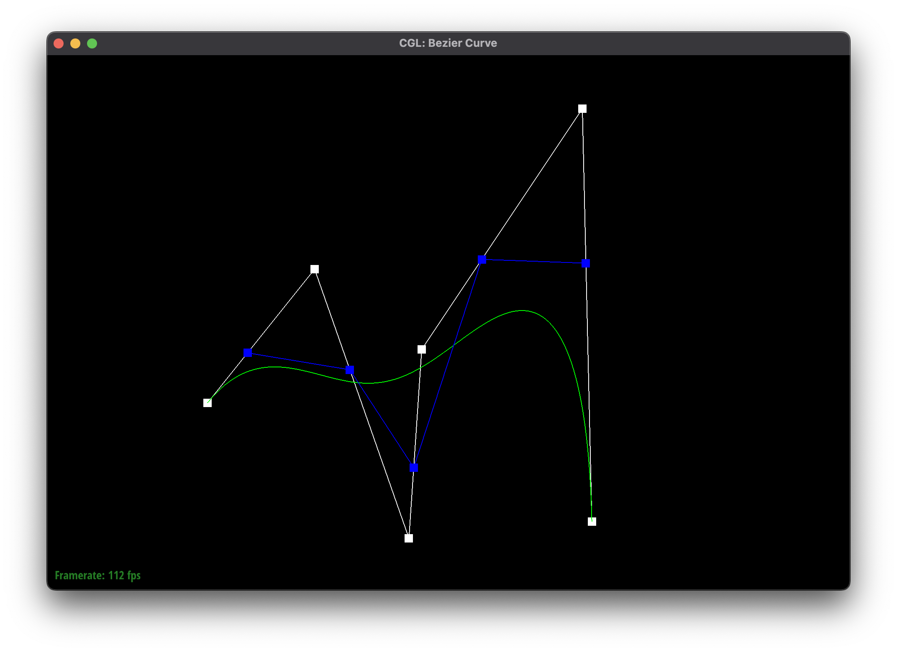
|
|
|
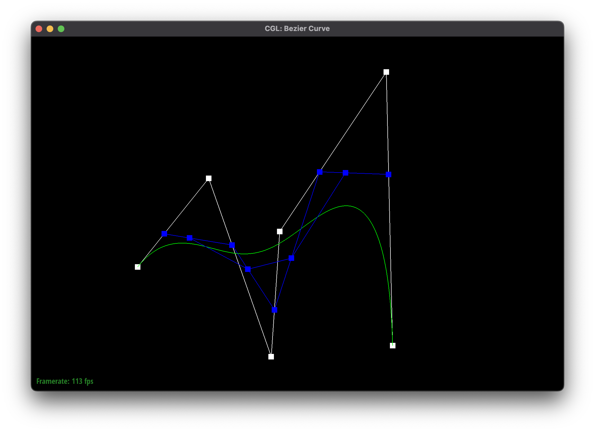
|
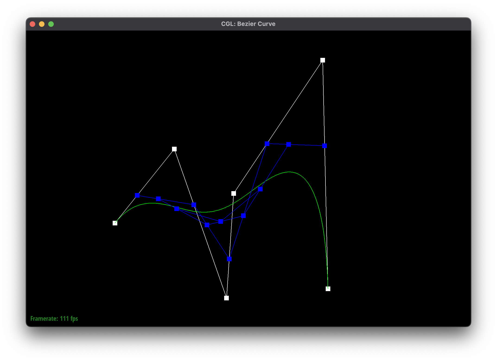
|
|
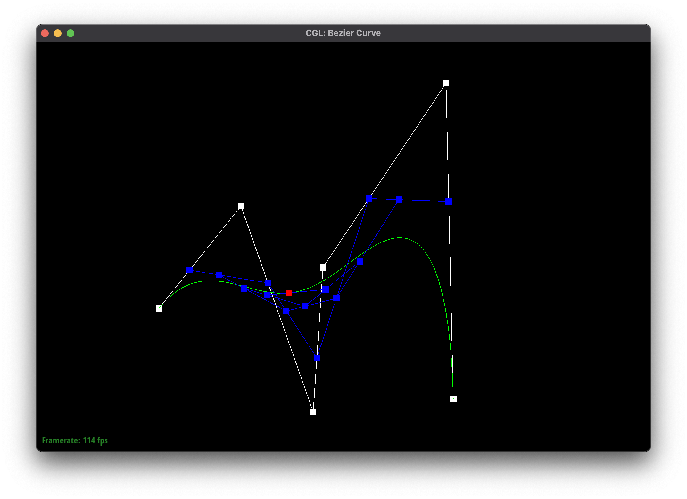
|
Show a screenshot of a slightly different Bezier curve by moving the original control points around and modifying the parameter \(t\) via mouse scrolling.
Part 2: Bezier Surfaces with Separable 1D de Casteljau
Briefly explain how de Casteljau algorithm extends to Bezier surfaces and how you implemented it in order to evaluate Bezier surfaces.De Casteljau's algorithm extends to Bezier surfaces by having two constants u and v in replace of t. The idea is to use u first, to find where our points would align for the bezier curves that make up our surface. Then we can use v, to calculate the point of our new line created from the point of u. This gives us a corresponding point in (u,v) space using de Casteljau's algorithm. To implement this we now are given a matrix and calculate our u points first by performing 1D de Casteljau's algorithm on the rows of our matrix. Then we can simply perform 1D de Casteljau's algorithm again with v on the points we got from our rows and u which results in our final point.
Show a screenshot of bez/teapot.bez (not .dae) evaluated by your implementation.
Section II: Triangle Meshes and Half-Edge Data Structure
Part 3: Area-Weighted Vertex Normals
Briefly explain how you implemented the area-weighted vertex normals.We implemented area-weighted vertex normals by using the half-edge of our current face to traverse the face to get it’s vertices and create vectors to calculate the face area and normal. We then added the weighted normal by adding the normal * area to our sumWeightedNormal variable. Once we got through all the faces we returned the unit version of our sumWeightedNormal divided by the total area of our surface.
Show screenshots of dae/teapot.dae (not .bez) comparing teapot shading with and without vertex normals. Use Q to toggle default flat shading and Phong shading.
Notice the smooth shading across individual triangles below.
Part 4: Edge Flip
Briefly explain how you implemented the edge flip operation and describe any interesting implementation / debugging tricks you have used.
C C
Λ Λ
╱│╲ ╱ ╲
╱ │ ╲ ╱ ╲
╱ │ ╲ ╱ ╱ ╲
╱ ╱ │ ▲ ╲ ╱ ╱ ▲ ╲
╱ ╱ │ ╲ ╲ ╱ ╱ ╲ ╲
╱ ╱ ▲ │ │ ╲ ╲ ╱ ╱ ╲ ╲
╱ ╱ │ │ │ ╲ ╲ ╱ ╱ ╲ ╲
╱ ╱ │ │ │ ╲ ╲ ╱ ╱ ╲ ╲
╱ ╱ │ │ │ ╲ ╲ ╱ ╱ ╲ ╲
╱ ╱ │ │ │ ╲ ╲ ╱ ╱ ╲ ╲
╱ ╱ │ │ │ ╲ ╲ ╱ ╱ ╲ ╲
╱ ╱ │ │ │ ╲ ╲ ╱ ╱ ╲ ╲
╱ ╱ │ │ │ ╲ ╲ ╱ ╱ ╲ ╲
╱ ╱ │ │ │ ╲ ╲ ╱ ╱ ╲ ╲
╱ ╱ │ │ │ ╲ ╲ ╱ ╱ ╲ ╲
╱ ╱ │ │ │ ╲ ╲ ╱ ╱ ╲ ╲
╱ ╱ │ │ │ ╲ ╲ ╱ ╱ ╲ ╲
╱ ╱ │ │ │ ╲ ╲ ╱ ╱ ╲ ╲
╱ ╱ │ │ │ ╲ ╲ ╱ ╱ ╲ ╲
╱ ╱ │ │ │ ╲ ╲ ╱ ╱ ╲ ╲
╱ ╱ │ │ │ ╲ ╲ ╱ ╱ ╲ ╲
╱ ╱ │ │ │ ╲ ╲ ╱ ╱ ╲ ╲
╱ ╱ │ │ │ ╲ ╲ ╱ ▼ ╲ ╲
╱ ▼ │ │ │ ╲ ╱ ──────────────────────────────────────────▶ ╲
A▕ │ │ │ ▲ ▏D A▕─────────────────────────────────────────────────▏D
╲ ╲ │ │ │ ╱ ╱ ╲ ◀─────────────────────────────────────────── ╱
╲ ╲ │ │ │ ╱ ╱ ╲ ▲ ╱
╲ ╲ │ │ │ ╱ ╱ ╲ ╲ ╱ ╱
╲ ╲ │ │ │ ╱ ╱ ╲ ╲ ╱ ╱
╲ ╲ │ │ │ ╱ ╱ ╲ ╲ ╱ ╱
╲ ╲ │ │ │ ╱ ╱ ╲ ╲ ╱ ╱
╲ ╲ │ │ │ ╱ ╱ ╲ ╲ ╱ ╱
╲ ╲ │ │ │ ╱ ╱ ╲ ╲ ╱ ╱
╲ ╲ │ │ │ ╱ ╱ ╲ ╲ ╱ ╱
╲ ╲ │ │ │ ╱ ╱ ╲ ╲ ╱ ╱
╲ ╲ │ │ │ ╱ ╱ ╲ ╲ ╱ ╱
╲ ╲ │ │ │ ╱ ╱ ╲ ╲ ╱ ╱
╲ ╲ │ │ │ ╱ ╱ ╲ ╲ ╱ ╱
╲ ╲ │ │ │ ╱ ╱ ╲ ╲ ╱ ╱
╲ ╲ │ │ │ ╱ ╱ ╲ ╲ ╱ ╱
╲ ╲ │ │ │ ╱ ╱ ╲ ╲ ╱ ╱
╲ ╲ │ │ │ ╱ ╱ ╲ ╲ ╱ ╱
╲ ╲ │ │ │ ╱ ╱ ╲ ╲ ╱ ╱
╲ ╲ │ │ ▼ ╱ ╱ ╲ ╲ ╱ ╱
╲ ▼ │ ╱ ╱ ╲ ╲ ╱ ╱
╲ │ ╱ ╲ ╲ ╱ ╱
╲ │ ╱ ╲ ╲ ╱
╲ │ ╱ ╲ ▼ ╱
╲│╱ ╲ ╱
V V
B B
The above ASCII art took way too long to create! Please enjoy it. The edge flip operation was not too complex, but like the later edge split, the devil is in the details. We implemented this by drawing the full edge flip operation on paper, and carefully labeling the two triangles (like above with the half edges, but in greater detail) before and after the operation. Afterwards, it was a simple matter of going through every half edge in the diagram above, and making sure it was correctly set to its new neighbors. Ofcourse, we also did these for vertices, faces, and edges exhaustively to make sure everything was correct. Labeling on paper really helped us because we could use the same labels as variable names within our code, without loss of generality! So, we could have our "left" half-edge and use that with our diagram, even though in the real application the half-edge provided might have been on the right of a certain edge. Debugging for this part wasn't too bad, so I'll save those stories for Edge Split and Loop division!
Show screenshots of the teapot before and after some edge flips.
Part 5: Edge Split
Briefly explain how you implemented the edge split operation and describe any interesting implementation / debugging tricks you have used.
C C
Λ Λ
╱│╲ ╱│╲
╱ │ ╲ ╱ │ ╲
╱ │ ╲ ╱ │ ╲
╱ ╱ │ ▲ ╲ ╱ ╱ │ ▲ ╲
╱ ╱ │ ╲ ╲ ╱ ╱ │ ╲ ╲
╱ ╱ ▲ │ │ ╲ ╲ ╱ ╱ ▲ │ │ ╲ ╲
╱ ╱ │ │ │ ╲ ╲ ╱ ╱ │ │ │ ╲ ╲
╱ ╱ │ │ │ ╲ ╲ ╱ ╱ │ │ │ ╲ ╲
╱ ╱ │ │ │ ╲ ╲ ╱ ╱ │ │ │ ╲ ╲
╱ ╱ │ │ │ ╲ ╲ ╱ ╱ │ │ │ ╲ ╲
╱ ╱ │ │ │ ╲ ╲ ╱ ╱ │ │ │ ╲ ╲
╱ ╱ │ │ │ ╲ ╲ ╱ ╱ │ │ │ ╲ ╲
╱ ╱ │ │ │ ╲ ╲ ╱ ╱ │ │ │ ╲ ╲
╱ ╱ │ │ │ ╲ ╲ ╱ ╱ │ │ │ ╲ ╲
╱ ╱ │ │ │ ╲ ╲ ╱ ╱ │ │ │ ╲ ╲
╱ ╱ │ │ │ ╲ ╲ ╱ ╱ │ │ │ ╲ ╲
╱ ╱ │ │ │ ╲ ╲ ╱ ╱ │ │ │ ╲ ╲
╱ ╱ │ │ │ ╲ ╲ ╱ ╱ │ │ │ ╲ ╲
╱ ╱ │ │ │ ╲ ╲ ╱ ╱ │ │ │ ╲ ╲
╱ ╱ │ │ │ ╲ ╲ ╱ ╱ │ │ │ ╲ ╲
╱ ╱ │ │ │ ╲ ╲ ╱ ╱ │ │ │ ╲ ╲
╱ ╱ │ │ │ ╲ ╲ ╱ ╱ │ │ │ ╲ ╲
╱ ╱ │ │ │ ╲ ╲ ╱ ▼ │ │ ▼ ╲ ╲
╱ ▼ │ │ │ ╲ ╱ ───────────────────▶ │ ───────────────────▶ ╲
A▕ │ │ │ ▲ ▏D A▕────────────────────────┼────────────────────────▏D
╲ ╲ │ │ │ ╱ ╱ ╲ ◀─────────────────── │ ◀─────────────────── ╱
╲ ╲ │ │ │ ╱ ╱ ╲ ╲ ▲ │ │ ▲ ╱
╲ ╲ │ │ │ ╱ ╱ ╲ ╲ │ │ │ ╱ ╱
╲ ╲ │ │ │ ╱ ╱ ╲ ╲ │ │ │ ╱ ╱
╲ ╲ │ │ │ ╱ ╱ ╲ ╲ │ │ │ ╱ ╱
╲ ╲ │ │ │ ╱ ╱ ╲ ╲ │ │ │ ╱ ╱
╲ ╲ │ │ │ ╱ ╱ ╲ ╲ │ │ │ ╱ ╱
╲ ╲ │ │ │ ╱ ╱ ╲ ╲ │ │ │ ╱ ╱
╲ ╲ │ │ │ ╱ ╱ ╲ ╲ │ │ │ ╱ ╱
╲ ╲ │ │ │ ╱ ╱ ╲ ╲ │ │ │ ╱ ╱
╲ ╲ │ │ │ ╱ ╱ ╲ ╲ │ │ │ ╱ ╱
╲ ╲ │ │ │ ╱ ╱ ╲ ╲ │ │ │ ╱ ╱
╲ ╲ │ │ │ ╱ ╱ ╲ ╲ │ │ │ ╱ ╱
╲ ╲ │ │ │ ╱ ╱ ╲ ╲ │ │ │ ╱ ╱
╲ ╲ │ │ │ ╱ ╱ ╲ ╲ │ │ │ ╱ ╱
╲ ╲ │ │ │ ╱ ╱ ╲ ╲ │ │ │ ╱ ╱
╲ ╲ │ │ │ ╱ ╱ ╲ ╲ │ │ │ ╱ ╱
╲ ╲ │ │ │ ╱ ╱ ╲ ╲ │ │ │ ╱ ╱
╲ ╲ │ │ ▼ ╱ ╱ ╲ ╲ │ │ ▼ ╱ ╱
╲ ▼ │ ╱ ╱ ╲ ╲ │ ╱ ╱
╲ │ ╱ ╲ ▼ │ ╱ ╱
╲ │ ╱ ╲ │ ╱
╲ │ ╱ ╲ │ ╱
╲│╱ ╲│╱
V V
B B
More pretty ascii art! Same rules apply.
The edge splitting was similiar to the edge flipping but with much more details, and much more capable of
going wrong. Again, it was extremely useful to label the points, edges, and faces on paper and use those
same labels and patterns in our code. Like mentioned earlier, we could do this without loss of generality,
which was helpful. For example, in our implementation I deleted the original edge (CB) and
created four new edges, left, right, top, and bottom. Ofcourse, these edges won't actually line
up like that, but as long as we keep their relationships correct, it doesn't matter! We also created 8 new
half-edges and two new faces for our split, and carefully assigned all the neighbors. One part that gave me
trouble was later forgetting to set the new half edges for our old vertices, which only presented
itself as a problem in loop division. Additionally, we created a new member variable for the
Edge class called shouldFlip. This boolean is only set to true for the "left" and
"right" edges, which are the true new edges. This will be used for loop division later, in conjuction
with another method for determining edge flips. Finally, we also made to sure to set
isNew = true for all the edges and vertex created in order to make sure we don't loop
infinitely in task 6.
Show screenshots of a mesh before and after some edge splits.
Show screenshots of a mesh before and after a combination of both edge splits and edge flips.

Write about your eventful debugging journey, if you have experienced one.
Debugging was a wild ride, to say the least. I thought I had cleared all the issues in this part, but only encountered more in task 6. However, one thing that really helped us debug was using LLDB, which in many ways was more competent than the built-in CLION debugger. Because of the weird nature of all the half-edge elements being represented as iterators, it was very difficult to get CLlion to actually present any of the class's information, as it would only point to the pointer for the next object, and so forth. LLDB was useful because we could use the print function to actually print out member information and so on!
Part 6: Loop Subdivision for Mesh Upsampling
Briefly explain how you implemented the loop subdivision and describe any interesting implementation / debugging tricks you have used.
The first step for loop subdivison was calculating the new position for all old vertices. We wrote a member
function for the vertex class called computeSumNeighbors() that iterates through all the
neighbors of a vertex and returns the sum of their position. Then, using the degree of the vertex and the
formulas discussed in class, we calculate the new position for each vertex and store it in
newPosition. Next, we iterate through each edge and calculate the position (using the formula
discussed in class) for the vertex that
will be created when we split there, and we store this in each edge. Since edges are destroyed in our split
function, we make sure to copy this data over to the new edges in the split function. Then, we iterate
through each old edge and split it, making sure to assign the new vertex's position to the one we just
calculated.
Now we do the edge flipping, which managed to stump us for a while. The key here is that it shouldn't just
be any edge that connects an old and new edge (which we had checked for using some if
statements). It also has to be one of the "left" or "right" edges from our diagram above! As we were
initially sure this part was correct, we tried many solutions to fix our broken loop division. Finally
however, I decided to remove the edge-flipping part and flip the edges by hand! This gave me the total
number of edges that needed to be flipped which made me realize our error. For the last step, we make sure
to set the position of each vertex to it's newPosition.
Take some notes, as well as some screenshots, of your observations on how meshes behave after loop subdivision. What happens to sharp corners and edges? Can you reduce this effect by pre-splitting some edges?
Loop subdivision definetly reduces sharp corners and edges. This can easily be see by repeatedly subdiving a cube!
|
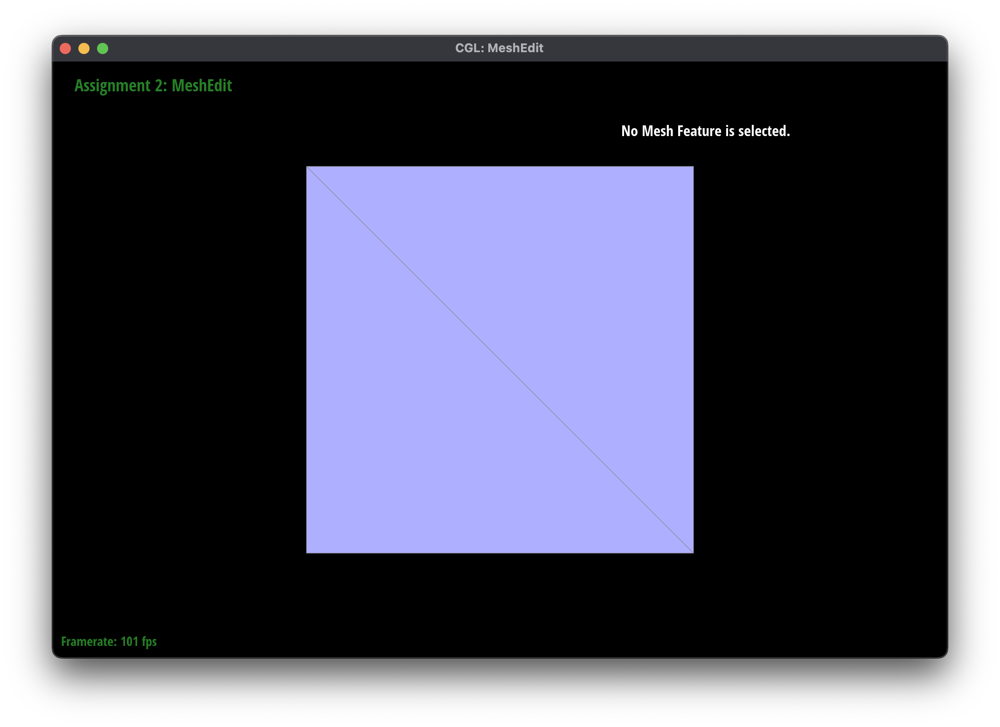
|
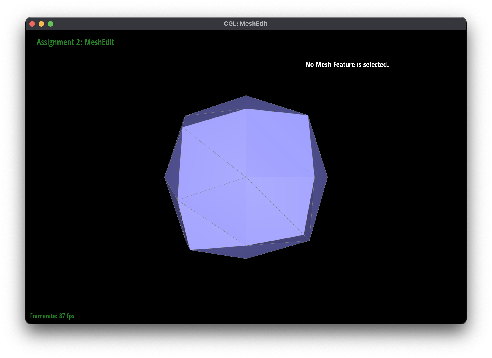
|
|
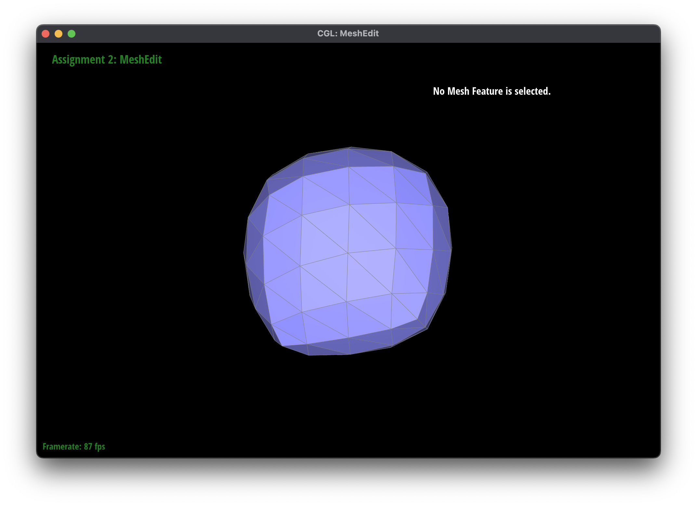
|
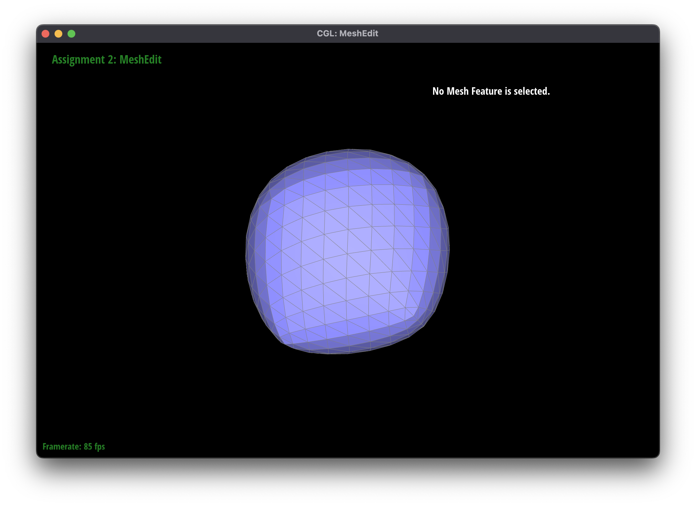
|
|
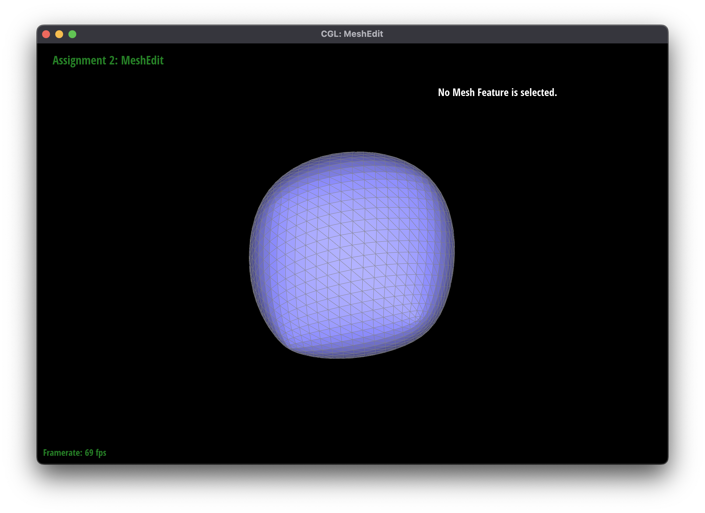
|
While the below cube looks kind of weird, we can clearly see that splitting around an edge can greatly reduce the smoothing of that edge!
|
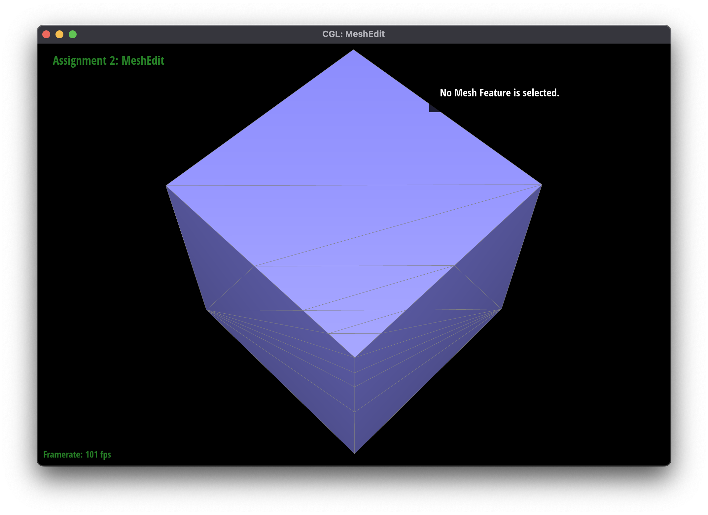
|
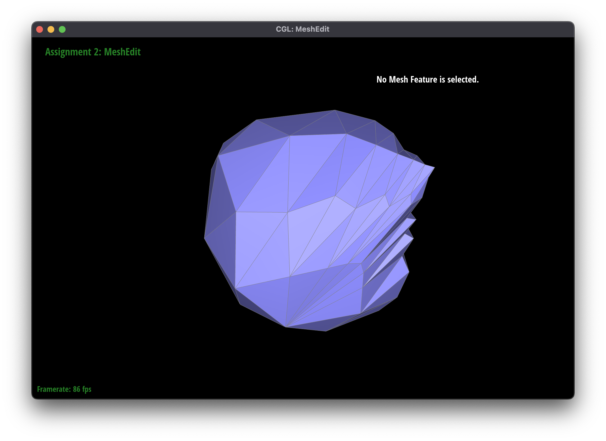
|
|
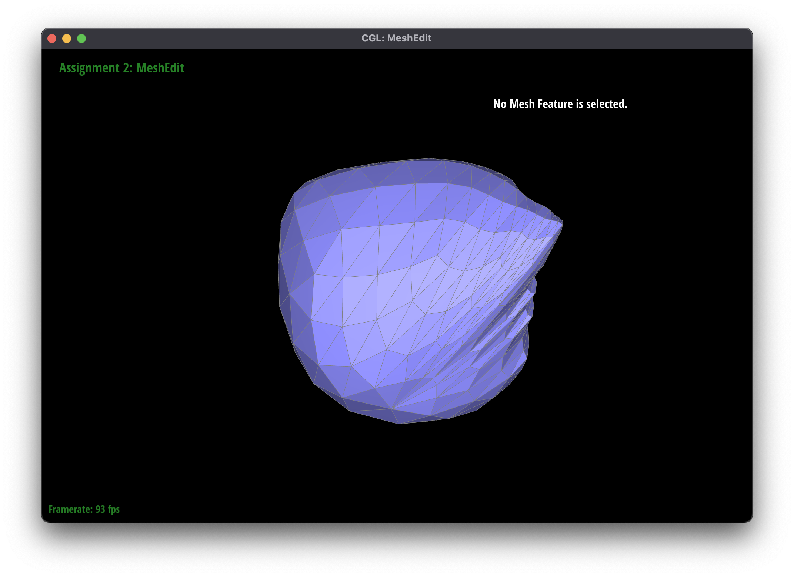
|
Load dae/cube.dae. Perform several iterations of loop subdivision on the cube. Notice that the cube becomes slightly asymmetric after repeated subdivisions. Can you pre-process the cube with edge flips and splits so that the cube subdivides symmetrically? Document these effects and explain why they occur. Also explain how your pre-processing helps alleviate the effects.
These effects occur because the cube mesh wasn't symmetrical in the first place! While the cube itself was, ofcourse, the triangles that make up the mesh weren't as visible in the picture below.
We can fix this by pre-processing the cube to make it symmetrical. All we need to do is split every edge that crosses a face in the triangle in order to make 4 triangles on each face of the cube! After doing so, our subdivided cube is beautiful.